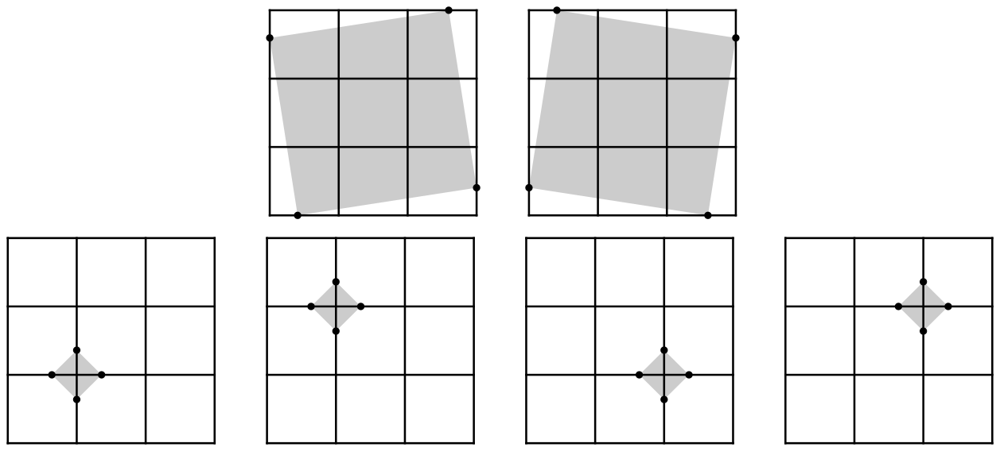

Squares on Grid Lines
You have a square of side length \(n\) on a 2D plane, partitioned into a grid of \(1 \times 1\) square cells, totaling \(n^2\) cells.
Your task is to answer \(q\) queries, numbered from \(1\) to \(q\), described below. In query \(i\), you are given a real number \(s_i\), and you must count the number of ways to place four points on the plane such that
- each point lies on the boundary of a cell (not necessarily the same), and
- the four points form the vertices of a square with area \(s_i\).
Here, the edges of the square formed by these points do not need to be parallel to the edges of the cells. If there are infinitely many valid placements, you must report that as your answer.
Two placements are considered different if there exists a point that appears in one placement but not in the other.
Input
The first line of input contains two integers \(n\) and \(q\) (\(1 \le n \le 2000\), \(1 \le q \le 100\,000\)). The \(i\)-th of the next \(q\) lines contains a real number \(s_i\) (\(0.01 \le s_i \le n^2\)), given with exactly two digits after the decimal point.
Output
Output \(q\) lines. The \(i\)-th line should contain the number of valid placements for query \(i\). If infinitely many exist, output -1 instead.
3 4 6.90 0.26 2.65 1.00
2 4 10 -1
Explanation for the sample input/output #1
For queries \(1\) and \(2\), the valid placements are illustrated in Figure I.1. The top two placements correspond to query \(1\), and the bottom four correspond to query \(2\). In each placement, the shaded region represents a square formed by the points.

1 5 0.49 0.50 0.51 0.99 1.00
0 1 2 2 1